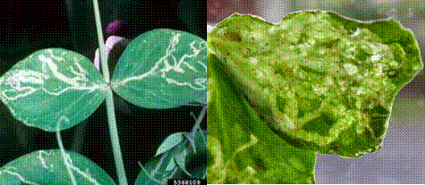
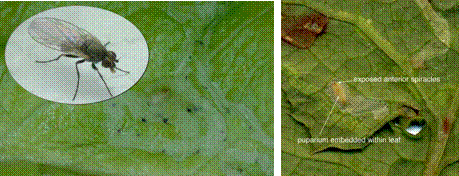

| Home |
| PEST OF PEAS |
MAJOR PESTS |
| 1. Pea Leaf-miner |
| 2. Pea Stem Fly |
| 3. Pea Aphid |
MINOR PESTS |
| 1. American Bollworm |
| 2. Pea Pod Borer |
| Questions |
| Download Notes |
PEAS :: MAJOR PESTS :: PEA LEAF- MINER
1. Pea Leaf-miner: Chromatomyia horticola (Agromyzidae: Diptera)
Distribution and status: Wide distribution in Northern India and Indian sub-continent
Host range: Cruciferous plants, antirrhinum, nasturtinum, pea, potato and linseed (Linum usitatissimum L.)
Damage symptoms
The large number of tunnels made by the larvae between the lower and upper epidermis interferes with photosynthesis and proper growth of the plants, making them look unattractive.
|  |
Bionomics
The adults are two-winged flies having greyish black mesonotum and yellowish frons. It is active from December to April or May and is believed to pass the rest of the year in soil, in the pupal stage. The adults emerge at the beginning of December and after mating, start laying eggs singly, in leaf tissues. Egg period 2-3 days, larval period 5 days and pupate within the galleries. Pupal period is 6 days and the life-cycle is completed in 13-14 days. The pest passes through several broods from December to April-May.
|  |
Management
Spray 1.0 L of dimethoate 30 EC in 750 L of water per ha and repeat spray at I5 day interval. A waiting period of 20 days should be observed for picking of pods.